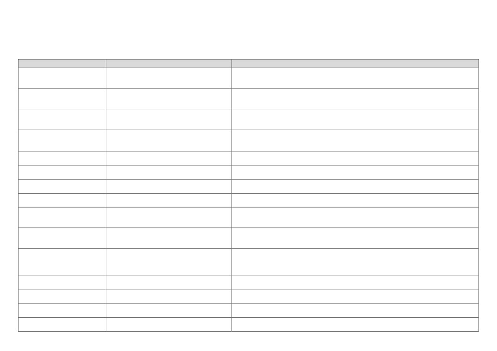

$_SERVER
$_SERVER süper globali Http (Hyper Text Transfer Protocol) (hiper metin transferi protokolü) server’ı (sunucusu) tarafından oluşturulan, server (sunucu) ve işletme ortamı bilgilerine
ulaşılabilme imkanı tanır. Her Http (Hyper Text Transfer Protocol) (hiper metin transferi protokolü) server’ı (sunucusu) bu değerleri oluşturacak diye bir garanti yoktur. Her Http (Hyper Text Transfer
Protocol) (hiper metin transferi protokolü) server’ı (sunucusu) farkı değerler de üretebilir. $_SERVER süper globalinin birçok ön tanımlı işlevi bulunmaktadır. Bu işlevleri inceleyecek olur isek;
value (değer)
definition (tanım)
description (açıklama)
Çalışmakta olan PHP (Hypertext Preprocessor) (üstün yazı ön işlemcisi) (Personal Home Page) (kişisel ana
PHP_SELF
$_SERVER["PHP_SELF"]
sayfa) dosyasının URL (Uniform Resource Locator) (nizami kaynak bulucu) yol tanımlama bilgisi
değerini döndürür. Web sitesinin alan adını içermez.
PHP (Hypertext Preprocessor) (üstün yazı ön işlemcisi) (Personal Home Page) (kişisel ana sayfa) dosyasının
GATEWAY_INTERFACE
$_SERVER["GATEWAY_INTERFACE"]
çalıştığı server'ın (sunucunun) desteklediği CGI (Common Gateway Interface) (ortak ağ geçidi arayüzü)
belirtiminin sürüm bilgisi değerini döndürür.
PHP (Hypertext Preprocessor) (üstün yazı ön işlemcisi) (Personal Home Page) (kişisel ana sayfa) dosyasının
SERVER_ADDR
$_SERVER["SERVER_ADDR"]
çalıştığı server'ın (sunucunun) IP (Internet Protocol) (İnternet Protokolü) adresi bilgisi değerini
döndürür.
PHP (Hypertext Preprocessor) (üstün yazı ön işlemcisi) (Personal Home Page) (kişisel ana sayfa) dosyasının
SERVER_NAME
$_SERVER["SERVER_NAME"]
çalıştığı server'ın (sunucunun) isim bilgisi değerini döndürür. İlgili değer Apache server'ı
(sunucusu) içerisinde "ServerName" yönergesinde tanımlıdır.
PHP (Hypertext Preprocessor) (üstün yazı ön işlemcisi) (Personal Home Page) (kişisel ana sayfa) dosyasının
SERVER_SOFTWARE
$_SERVER["SERVER_SOFTWARE"]
çalıştığı server'ın (sunucunun) yazılım bilgisi değerini döndürür.
PHP (Hypertext Preprocessor) (üstün yazı ön işlemcisi) (Personal Home Page) (kişisel ana sayfa) dosyasına
SERVER_PROTOCOL
$_SERVER["SERVER_PROTOCOL"]
isteğinin yapıldığı protokolün isim ve sürüm bilgisi değerini döndürür.
PHP (Hypertext Preprocessor) (üstün yazı ön işlemcisi) (Personal Home Page) (kişisel ana sayfa) dosyasına
REQUEST_METHOD
$_SERVER["REQUEST_METHOD"]
erişim için kullanılan istek yöntemi bilgisi değerini döndürür.
PHP (Hypertext Preprocessor) (üstün yazı ön işlemcisi) (Personal Home Page) (kişisel ana sayfa) dosyasına
REQUEST_TIME
$_SERVER["REQUEST_TIME"]
erişim için başlatılan isteğin başlangıç zaman damgası bilgisi değerini döndürür.
PHP (Hypertext Preprocessor) (üstün yazı ön işlemcisi) (Personal Home Page) (kişisel ana sayfa) dosyasına
REQUEST_TIME_FLOAT
$_SERVER["REQUEST_TIME_FLOAT"]
erişim için başlatılan isteğin mikro saniye değeri de dahil olmak üzere başlangıç zaman
damgası bilgisi değerini döndürür.
PHP (Hypertext Preprocessor) (üstün yazı ön işlemcisi) (Personal Home Page) (kişisel ana sayfa) dosyasına
QUERY_STRING
$_SERVER["QUERY_STRING"]
erişim esnasında kullanılan sorgu dizesi bilgisi değerini döndürür. Web sitesinin alan adını
ve yol tanımlama bilgisini içermez.
Server'ın (sunucunun) ayar dosyasında tanımlandığı gibi, erişilen geçerli PHP (Hypertext
Preprocessor) (üstün yazı ön işlemcisi) (Personal Home Page) (kişisel ana sayfa) dosyasının çalıştığı root
DOCUMENT_ROOT
$_SERVER["DOCUMENT_ROOT"]
(kök) dizini bilgisi değerini döndürür. İlgili değer Apache server'ı (sunucusu) içerisinde
"DocumentRoot" yönergesinde tanımlıdır.
PHP (Hypertext Preprocessor) (üstün yazı ön işlemcisi) (Personal Home Page) (kişisel ana sayfa) dosyasına
HTTP_ACCEPT
$_SERVER["HTTP_ACCEPT"]
erişim isteği için kabul edilen başlık içeriği bilgisi değerini döndürür.
PHP (Hypertext Preprocessor) (üstün yazı ön işlemcisi) (Personal Home Page) (kişisel ana sayfa) dosyasına
HTTP_ACCEPT_ENCODING
$_SERVER["HTTP_ACCEPT_ENCODING"]
erişim isteği için kabul edilen kodlama başlık içeriği bilgisi değerini döndürür.
PHP (Hypertext Preprocessor) (üstün yazı ön işlemcisi) (Personal Home Page) (kişisel ana sayfa) dosyasına
HTTP_ACCEPT_LANGUAGE
$_SERVER["HTTP_ACCEPT_LANGUAGE"]
erişim isteği için kabul edilen lisan başlık içeriği bilgisi değerini döndürür.
PHP (Hypertext Preprocessor) (üstün yazı ön işlemcisi) (Personal Home Page) (kişisel ana sayfa) dosyasına
HTTP_CONNECTION
$_SERVER["HTTP_CONNECTION"]
erişim isteği için kabul edilen bağlantı başlık içeriği bilgisi değerini döndürür.
PHP (Hypertext Preprocessor) (üstün yazı ön işlemcisi) (Personal Home Page) (kişisel ana sayfa) dosyasının
HTTP_HOST
$_SERVER["HTTP_HOST"]
çalıştığı host (ev sahibi) başlığı bilgisi değerini döndürür.
Kullanıcının browser'ını (tarayıcısını) geçerli PHP (Hypertext Preprocessor) (üstün yazı ön işlemcisi)
(Personal Home Page) (kişisel ana sayfa) dosyasına gönderen (referans olan) sayfanın URL (Uniform
HTTP_REFERER
$_SERVER["HTTP_REFERER"]
Resource Locator) (nizami kaynak bulucu) bilgisi değerini döndürür. Bazen değer elde
edilemeyebilir.
PHP (Hypertext Preprocessor) (üstün yazı ön işlemcisi) (Personal Home Page) (kişisel ana sayfa) dosyasına
HTTP_USER_AGENT
$_SERVER["HTTP_USER_AGENT"]
erişim isteğinde bulunan kullanıcı browser'ı (tarayıcısı) sistem bilgisi değerini döndürür.
PHP (Hypertext Preprocessor) (üstün yazı ön işlemcisi) (Personal Home Page) (kişisel ana sayfa) dosyasına
erişim isteği için Https (Hyper Text Transfer Protocol Secure) (güvenli hiper metin transferi protokolü)
HTTPS
$_SERVER["HTTPS"]
protokolünün kullanılıp kullanılmadığı bilgisi değerini döndürür. Https (Hyper Text Transfer
Protocol Secure) (güvenli hiper metin transferi protokolü) protokolü yoksa değer boş döner.
Çalışmakta olan PHP (Hypertext Preprocessor) (üstün yazı ön işlemcisi) (Personal Home Page) (kişisel ana
REMOTE_ADDR
$_SERVER["REMOTE_ADDR"]
sayfa) dosyasını görüntüleyen kullanıcının IP (Internet Protocol) (İnternet Protokolü) adresi bilgisi
değerini döndürür.
Çalışmakta olan PHP (Hypertext Preprocessor) (üstün yazı ön işlemcisi) (Personal Home Page) (kişisel ana
sayfa) dosyasını görüntüleyen kullanıcının host (ev sahibi) başlığı bilgisi değerini döndürür. İlgili
REMOTE_HOST
$_SERVER["REMOTE_HOST"]
değerin oluşturulabilmesi için Apache server'ı (sunucusu) içerisinde "HostnameLookups On"
tanımı muhakkak kullanılmalıdır.
Çalışmakta olan PHP (Hypertext Preprocessor) (üstün yazı ön işlemcisi) (Personal Home Page) (kişisel ana
REMOTE_PORT
$_SERVER["REMOTE_PORT"]
sayfa) dosyasını görüntüleyen kullanıcı cihazının, web server (sunucu) ile haberleşmek için
kullandığı port bilgisi değerini döndürür.
Çalışmakta olan PHP (Hypertext Preprocessor) (üstün yazı ön işlemcisi) (Personal Home Page) (kişisel ana
SCRIPT_FILENAME
$_SERVER["SCRIPT_FILENAME"]
sayfa) dosyasının server (sunucu) üzerinde bulunduğu mutlak yol tanımlama bilgisi değerini
döndürür.
PHP (Hypertext Preprocessor) (üstün yazı ön işlemcisi) (Personal Home Page) (kişisel ana sayfa) dosyasının
SERVER_ADMIN
$_SERVER["SERVER_ADMIN"]
çalıştığı server'ın (sunucunun) yönetici e-mail (elektronik posta) adresi bilgisi değerini döndürür.
İlgili değer Apache server'ı (sunucusu) içerisinde "ServerAdmin" yönergesinde tanımlıdır.
PHP (Hypertext Preprocessor) (üstün yazı ön işlemcisi) (Personal Home Page) (kişisel ana sayfa) dosyasının
SERVER_PORT
$_SERVER["SERVER_PORT"]
çalıştığı server'ın (sunucunun) iletişim amacıyla kullanılan server (sunucu) port bilgisi değerini
döndürür. İlgili değer Apache server'ı (sunucusu) içerisinde "Listen" yönergesinde tanımlıdır.
PHP (Hypertext Preprocessor) (üstün yazı ön işlemcisi) (Personal Home Page) (kişisel ana sayfa) dosyasının
çalıştığı server'ın (sunucunun), server (sunucu) yazılımı ve diğer yazılımların sürümünü, sanal
SERVER_SIGNATURE
$_SERVER["SERVER_SIGNATURE"]
host (ev sahibi) adını ve server (sunucu) port bilgisi değerini döndürür. Bu bilgiler kısaca server
(sunucu) imzası olarak adlandırılır. (Eğer etkinse.)
Çalışmakta olan PHP (Hypertext Preprocessor) (üstün yazı ön işlemcisi) (Personal Home Page) (kişisel ana
SCRIPT_NAME
$_SERVER["SCRIPT_NAME"]
sayfa) dosyasının server (sunucu) üzerinde bulunduğu yol tanımlama bilgisi değerini döndürür.
Çalışmakta olan PHP (Hypertext Preprocessor) (üstün yazı ön işlemcisi) (Personal Home Page) (kişisel ana
sayfa) dosyasının URI (Uniform Resourse Identifier) (nizami kaynak tanıtıcı) yol tanımlama bilgisi
REQUEST_URI
$_SERVER["REQUEST_URI"]
değerini döndürür. Web sitesinin alan adını ve PHP (Hypertext Preprocessor) (üstün yazı ön işlemcisi)
(Personal Home Page) (kişisel ana sayfa) dosyası adını içermez.